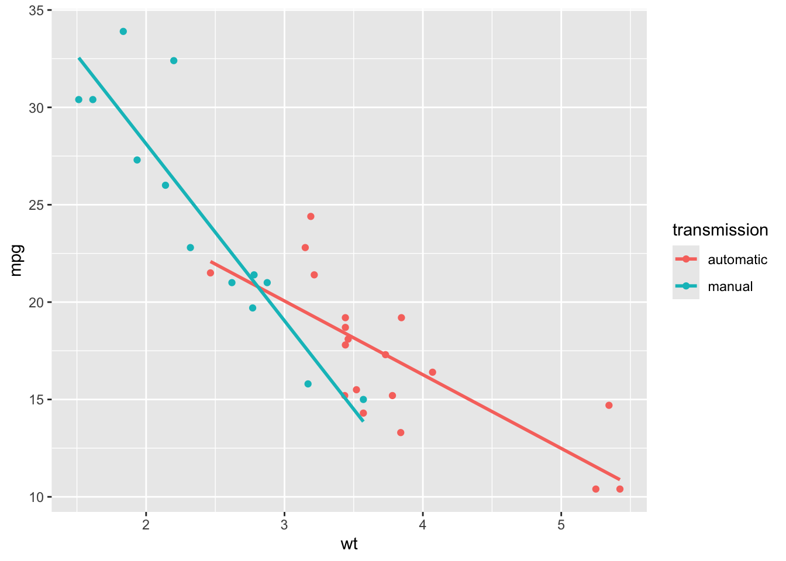
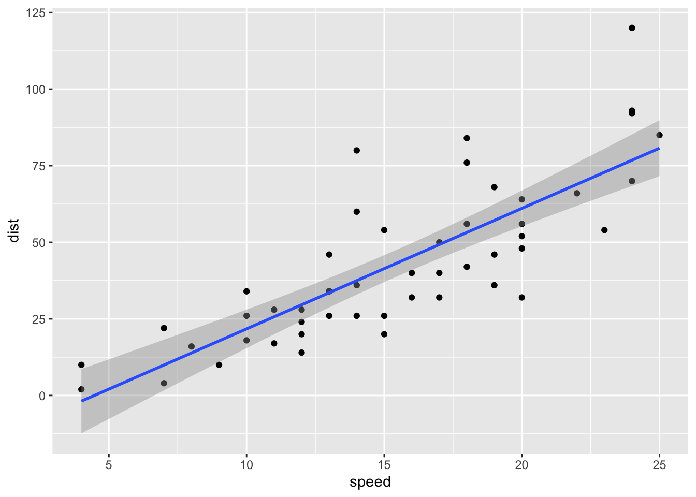
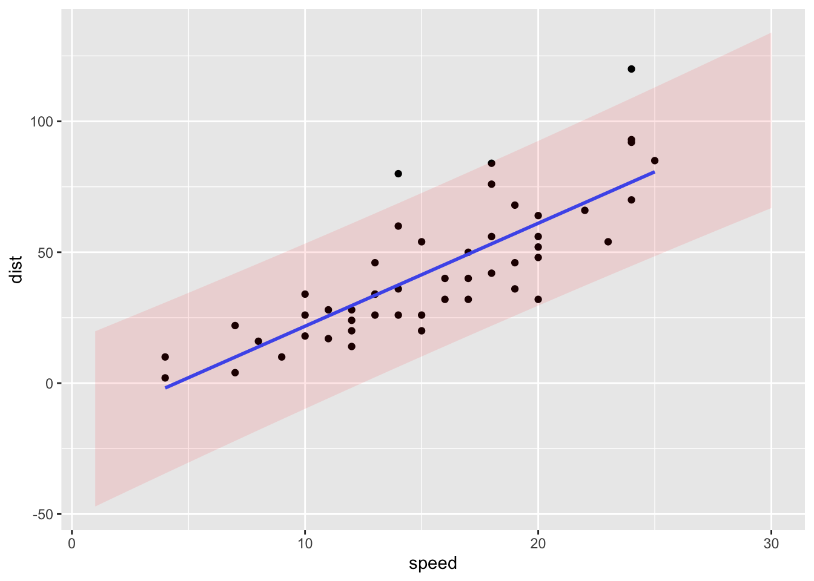

head(cars) speed dist
1 4 2
2 4 10
3 7 4
4 7 22
5 8 16
6 9 10In this chapter we will
summary() command to extract detailed information about the model fit;To illustrate fitting a linear model in R, for convenience we’ll use one of R’s built in data sets: cars
head(cars) speed dist
1 4 2
2 4 10
3 7 4
4 7 22
5 8 16
6 9 10Our dependent variable (dist) is the stopping distance in feet, and the independent variable is (speed) is the speed in miles per hour. The cars are very old (1920s!), but it’s a convenient data set for illustrating the linear modelling syntax.
The basic syntax is
lm(formula, data )where the formula argument corresponds to the equation for \(E(Y_i)\) and uses column names from the data frame specified by the data argument. Some formula examples are as follows.
| Model | formula |
|---|---|
| \(Y_i = \beta_0 + \varepsilon_i\) | dist ~ 1 |
| \(Y_i = \beta_0 + \beta_1 x_i+ \varepsilon_i\) | dist ~ speed |
| \(Y_i = \beta_0 + \beta_1 x_i+ \beta_2 x_i^2+\varepsilon_i\) | dist ~ speed + I(speed^2) |
| \(Y_i = \beta_0 + \beta_1 \log x_i+\varepsilon_i\) | dist ~ log(speed) |
For example, to fit the simple linear regression model we do
lm(dist ~ speed, cars)
Call:
lm(formula = dist ~ speed, data = cars)
Coefficients:
(Intercept) speed
-17.579 3.932 and from the Coefficients output we read off \(\hat{\beta}_0= -17.579\) and \(\hat{\beta}_1 = 3.932\).
When studying a topic such as this and trying out R functions, sometimes it can help you to understand what is going on if you can obtain the same results for yourself. For example:
# Setup the design matrix X
X <- matrix(c(rep(1, 50), cars$speed),
nrow = 50,
ncol = 2)
# Setup the observation vector
y <- matrix(cars$dist,
nrow = 50,
ncol = 1)
# Compute the least squares estimates and compare with the Coefficients output above
solve(t(X) %*% X) %*% t(X) %*% y [,1]
[1,] -17.579095
[2,] 3.932409We can plot the fitted model and the data with the commands
library(tidyverse)
ggplot(cars, aes(x = speed, y = dist))+
geom_point()+
geom_smooth(method = "lm", formula = "y ~ x", se = FALSE)
Note that the formula argument corresponds to the fitted model, but with variables x and y rather than speed and dist. We will change the argument se to TRUE when we have learned more about confidence intervals in the next chapter.
summary() commandThe summary command will give us more information about our model fit, if we first assign the fitted model to a variable.
For example:
lmCars <- lm(dist ~ speed, cars)
summary(lmCars)
Call:
lm(formula = dist ~ speed, data = cars)
Residuals:
Min 1Q Median 3Q Max
-29.069 -9.525 -2.272 9.215 43.201
Coefficients:
Estimate Std. Error t value Pr(>|t|)
(Intercept) -17.5791 6.7584 -2.601 0.0123 *
speed 3.9324 0.4155 9.464 1.49e-12 ***
---
Signif. codes: 0 '***' 0.001 '**' 0.01 '*' 0.05 '.' 0.1 ' ' 1
Residual standard error: 15.38 on 48 degrees of freedom
Multiple R-squared: 0.6511, Adjusted R-squared: 0.6438
F-statistic: 89.57 on 1 and 48 DF, p-value: 1.49e-12We interpret the output as follows.
Residuals refer to those residuals we defined previously: \(e_i = y_i - \hat{y}_i\).
The Estimate column gives the least squares estimate.
The Std. Error column gives the estimated standard error for each least squares estimate.
The t value and Pr(>|t|) refer to a hypothesis test that the corresponding model parameter is 0. We’ll discuss this in more detail in a later chapter.
The residual standard error is the estimated value \(\hat{\sigma}\) of \(\sigma\) (standard deviation of the errors, not the variance). Recall that this is computed using the residual sum of squares: \(\hat{\sigma}^2 = \mathbf{e}^T\mathbf{e}/(n-p)\)
The Multiple R-squared and Adjusted R-squared both report how ‘useful’ the model is for predicting the dependent variable: they report the proportion of the variation in \(y_1,\ldots,y_n\) that can be explained by variation in the dependent variables. The Adjusted R-squared corrects for the number of independent variables in the model.
The F-statistic and p-value also refer to a hypothesis test which we will discuss later.
# Setup the design matrix X
X <- matrix(c(rep(1, 50), cars$speed),
nrow = 50,
ncol = 2)
# Setup the observation vector
y <- matrix(cars$dist,
nrow = 50,
ncol = 1)
# Compute the least squares estimates
betahat <- solve(t(X) %*% X) %*% t(X) %*% y
# Compute the residual vector
e <- y - X %*% betahat
# Residual standard error is (noting n - p = 50 - 2)
sqrt(t(e) %*% e / 48) [,1]
[1,] 15.37959Recall the cancer example from the previous chapter
library(tidyverse)
cancer <- read_csv("https://oakleyj.github.io/exampledata/cancer.csv")
head(cancer)# A tibble: 6 × 2
survival organ
<dbl> <chr>
1 124 Stomach
2 42 Stomach
3 25 Stomach
4 45 Stomach
5 412 Stomach
6 51 StomachWe defined \(Y_{ij}\) as the \(j\)-th observation (survival time) in group \(i\), with group defined by organ (one of stomach, bronchus, colon, ovary or breast)
We fit the model \[ Y_{ij}=\mu_i + \varepsilon_{ij},\] for \(i=1,\ldots,g\), \(j=1,\ldots,n_i\) to the cancer data as follows.
lmCancer <- lm(survival ~ organ - 1, cancer)(the reason for the - 1 in the formula will become clearer shortly.)
We can now use the summary() command to get the parameter estimates
summary(lmCancer)
Call:
lm(formula = survival ~ organ - 1, data = cancer)
Residuals:
Min 1Q Median 3Q Max
-1371.91 -241.75 -111.50 87.19 2412.09
Coefficients:
Estimate Std. Error t value Pr(>|t|)
organBreast 1395.9 201.9 6.915 3.77e-09 ***
organBronchus 211.6 162.4 1.303 0.19764
organColon 457.4 162.4 2.817 0.00659 **
organOvary 884.3 273.3 3.235 0.00199 **
organStomach 286.0 185.7 1.540 0.12887
---
Signif. codes: 0 '***' 0.001 '**' 0.01 '*' 0.05 '.' 0.1 ' ' 1
Residual standard error: 669.5 on 59 degrees of freedom
Multiple R-squared: 0.5437, Adjusted R-squared: 0.505
F-statistic: 14.06 on 5 and 59 DF, p-value: 4.766e-09We have \(\hat{\beta}_1 = 1395.9\), \(\hat{\beta}_2 = 211.6\) and so on.
Be careful with datasets where a factor/qualitative variable has been recorded numerically! You will need to make sure R understands that the variable is really a factor and not a quantitative variable.
As an example, suppose the cancer data were coded as 1 = Stomach, 2 = Bronchus, 3 = Colon, 4 = Ovary, 5 = Breast. We’ll set up a variable organ2 to represent this:
cancer2 <- cancer %>%
mutate(organ2 = rep(1:5, times = c(13, 17, 17, 6, 11)))Now we’ll try
lm(survival ~ organ2, data = cancer2)
Call:
lm(formula = survival ~ organ2, data = cancer2)
Coefficients:
(Intercept) organ2
-240.3 288.9 What model has been fitted, what does the coefficient organ2 represent here, and why doesn’t it make sense?
We can get R to interpret the organ2 variable correctly, by specifying it as a factor variable:
lm(survival ~ factor(organ2) - 1, data = cancer2)
Call:
lm(formula = survival ~ factor(organ2) - 1, data = cancer2)
Coefficients:
factor(organ2)1 factor(organ2)2 factor(organ2)3 factor(organ2)4
286.0 211.6 457.4 884.3
factor(organ2)5
1395.9 Recall the alternative parametrisation: \[ Y_{i,j}=\mu + \tau_i + \varepsilon_{i,j}, \] for \(i=1,\ldots,g\), \(j=1,\ldots,n_i\) and with \(\varepsilon_{i,j}\sim N(0,\sigma^2)\) and the constraint \(\tau_1=0\).
This is actually the default parametrisation in R. If we leave out the -1 from the previous command, we just do
lmCancer <- lm(survival ~ organ, cancer)and then use the summary() command as before.
summary(lmCancer)
Call:
lm(formula = survival ~ organ, data = cancer)
Residuals:
Min 1Q Median 3Q Max
-1371.91 -241.75 -111.50 87.19 2412.09
Coefficients:
Estimate Std. Error t value Pr(>|t|)
(Intercept) 1395.9 201.9 6.915 3.77e-09 ***
organBronchus -1184.3 259.1 -4.571 2.53e-05 ***
organColon -938.5 259.1 -3.622 0.000608 ***
organOvary -511.6 339.8 -1.506 0.137526
organStomach -1109.9 274.3 -4.046 0.000153 ***
---
Signif. codes: 0 '***' 0.001 '**' 0.01 '*' 0.05 '.' 0.1 ' ' 1
Residual standard error: 669.5 on 59 degrees of freedom
Multiple R-squared: 0.3037, Adjusted R-squared: 0.2565
F-statistic: 6.433 on 4 and 59 DF, p-value: 0.0002295(Intercept) refers to \(\mu\). (So we can interpret the -1 term in the formula argument as saying that we do not want an intercept.)
We have \(\hat{\mu} = 1395.9\), \(\hat{\tau}_2 = -1184.3,\ldots,\hat{\tau}_5 = -1109.9\).
We presented an ANCOVA model presented in Section 3.7 for the mtcars data
head(mtcars) mpg cyl disp hp drat wt qsec vs am gear carb
Mazda RX4 21.0 6 160 110 3.90 2.620 16.46 0 1 4 4
Mazda RX4 Wag 21.0 6 160 110 3.90 2.875 17.02 0 1 4 4
Datsun 710 22.8 4 108 93 3.85 2.320 18.61 1 1 4 1
Hornet 4 Drive 21.4 6 258 110 3.08 3.215 19.44 1 0 3 1
Hornet Sportabout 18.7 8 360 175 3.15 3.440 17.02 0 0 3 2
Valiant 18.1 6 225 105 2.76 3.460 20.22 1 0 3 1and we will recap the details here. We considered the column am which describes transmission type and relabelled the elements as follows
mtcars2 <- mtcars %>%
mutate(transmission = factor(am, labels = c("automatic", "manual")))An ANCOVA model for this data would be
\[
Y_{ij} = \mu + \tau_i + \beta_i x_{ij} + \varepsilon_{ij}
\] where \(Y_{ij}\) is the fuel economy mpg of the \(j\)th car in group \(i\), and \(x_{ij}\) is the corresponding weight wt, for \(i=1,2\). Group \(i=1\) corresponds to automatic cars, and \(i=2\) corresponds to manual cars. We include the constraint \(\tau_1 = 0\).
We noted that the effect of weight on fuel economy (the ‘beta’ parameter) changes depending on whether the car is a manual or automatic: there is an interaction between transmission and weight in affecting the fuel economy. Interactions are specified with a * in the formula argument:
lmCars <- lm(mpg ~ wt * transmission, mtcars2)
summary(lmCars)
Call:
lm(formula = mpg ~ wt * transmission, data = mtcars2)
Residuals:
Min 1Q Median 3Q Max
-3.6004 -1.5446 -0.5325 0.9012 6.0909
Coefficients:
Estimate Std. Error t value Pr(>|t|)
(Intercept) 31.4161 3.0201 10.402 4.00e-11 ***
wt -3.7859 0.7856 -4.819 4.55e-05 ***
transmissionmanual 14.8784 4.2640 3.489 0.00162 **
wt:transmissionmanual -5.2984 1.4447 -3.667 0.00102 **
---
Signif. codes: 0 '***' 0.001 '**' 0.01 '*' 0.05 '.' 0.1 ' ' 1
Residual standard error: 2.591 on 28 degrees of freedom
Multiple R-squared: 0.833, Adjusted R-squared: 0.8151
F-statistic: 46.57 on 3 and 28 DF, p-value: 5.209e-11From this, we read off \(\hat{\mu}=31.4161\), \(\hat{\beta}_1=-3.7859\), \(\hat{\tau}_2=14.8784\), \(\hat{\beta}_2=-3.7859 -5.2984\).
We can plot the fitted model with the commands
ggplot(mtcars2, aes(x = wt, y = mpg, colour = transmission)) +
geom_point() +
geom_smooth(method = "lm", se = FALSE)
Use the plot to check you have interpreted the summary output correctly. The absolute gradient is larger for the manual group, and the manual group has a higher intercept.
Given a new observation \(i\) with regressor variables given by a row vector \(\boldsymbol{x}_i^T\) (similar to a row of the design matrix \(X\)), there are two types of interval we may want to construct, a confidence interval for the expected value of the response, \(\boldsymbol{x}_i^T\boldsymbol{\beta}\), and a prediction interval for the value of the response itself. We should expect the prediction interval to be wider as the response has the extra variability coming from the error term in the model.
For estimation of the mean we use the fact that \[\boldsymbol{\hat{\beta}} \sim N_p(\boldsymbol{\beta},\sigma^2(X^TX)^{-1})\] to yield \[\boldsymbol{x}_i^T \boldsymbol{\hat{\beta}} \sim N(\boldsymbol{x}_i^T\boldsymbol{\beta},\sigma^2\boldsymbol{x}_i^T(X^TX)^{-1}\boldsymbol{x}_i)\] so that \[\frac{\boldsymbol{x}_i^T\boldsymbol{\hat{\beta}}-\boldsymbol{x}_i^T\boldsymbol{\beta}}{\sqrt{\sigma^2\boldsymbol{x}_i^T(X^TX)^{-1}\boldsymbol{x}_i}} \sim N(0,1).\]
We cannot calculate the confidence interval from this relationship because we do not know the value of \(\sigma^2\), and we have to replace it with its estimate \(\hat \sigma^2\) and use the \(t\) distribution rather than \(N(0,1)\). Our standardized version of \(\boldsymbol{x}_i^T\boldsymbol{\hat{\beta}}\) becomes \[T=\frac{\boldsymbol{x}_i^T \boldsymbol{\hat{\beta}}-\boldsymbol{x}_i^T \boldsymbol{\beta}}{\sqrt{\hat \sigma^2\boldsymbol{x}_i^T(X^TX)^{-1}\boldsymbol{x}_i}}=\frac{\frac{\boldsymbol{x}_i^T \boldsymbol{\hat{\beta}}-\boldsymbol{x}_i^T \boldsymbol{\beta}}{\sqrt{\sigma^2\boldsymbol{x}_i^T(X^TX)^{-1}\boldsymbol{x}_i}} }{\sqrt{\frac{\hat\sigma^2}{\sigma^2}}},\] and we have \(T \sim t_{n-p}\). Hence a \(100(1-\alpha)\%\) confidence interval for the mean of the predicted value is given by \[\boldsymbol{x}_i^T \boldsymbol{\hat{\beta}}\pm t_{n-p,1-\alpha/2}\sqrt{\hat \sigma^2\boldsymbol{x}_i^T(X^TX)^{-1}\boldsymbol{x}_i}.\]
A similar argument leads to a \(100(1-\alpha)\%\) prediction interval for the future observation \(y_i\). It is given by \[\boldsymbol{x_i}^T \boldsymbol{ \hat{\beta}}\pm t_{n-p,1-\alpha/2}\sqrt{\hat \sigma^2(1+\boldsymbol{x}_i^T(X^TX)^{-1}\boldsymbol{x}_i)}.\]
The prediction interval for an observation is wider than the confidence interval for the expected value of the observations because of the extra uncertainty coming from the error term (\(\hat \sigma^2\)).
To get the predictions and either type of interval, we need to set up a new data frame with the column names for the independent variables the same as those in the original data frame used to fit the model.
For the cars simple linear regression model, we’ll obtain predictions and intervals for 30 values of speed evenly spaced between 1 and 30.
predictDf <- data.frame(speed = 1:30)We fit the model, assign it to an object, and then use that object in a predict() command. For 95% confidence intervals for the mean response
lmCars <- lm(dist ~ speed, cars)
ciCars <- predict(lmCars, predictDf,
interval = "confidence",
size = 0.95)
head(ciCars) fit lwr upr
1 -13.646686 -26.447265 -0.846107
2 -9.714277 -21.733068 2.304513
3 -5.781869 -17.026591 5.462853
4 -1.849460 -12.329543 8.630624
5 2.082949 -7.644150 11.810048
6 6.015358 -2.973341 15.004056The fit column gives the predictions, and lwr and upr give the confidence interval endpoints.
To get prediction intervals instead, we change the interval argument:
piCars <- predict(lmCars, predictDf,
interval = "prediction",
size = 0.95)
head(piCars) fit lwr upr
1 -13.646686 -47.11414 19.82076
2 -9.714277 -42.89057 23.46202
3 -5.781869 -38.68565 27.12192
4 -1.849460 -34.49984 30.80092
5 2.082949 -30.33359 34.49948
6 6.015358 -26.18731 38.21803Check the R output makes sense! The predicted values (the fit column) should be the same with either interval = "confidence" or interval = "prediction", but the intervals with the latter argument should be wider.
If we just want to plot confidence intervals for the mean response, we can get this directly with ggplot2: we use the argument se = TRUE in the geom_smooth command:
ggplot(cars, aes(x = speed, y = dist))+
geom_point()+
geom_smooth(method = "lm", formula = "y ~ x", se = TRUE)
Plotting prediction intervals is more work! Recall that we created prediction intervals and stored them in piCars. We do
ggplot(cars, aes(x = speed, y = dist)) +
geom_point() +
geom_smooth(method = "lm", formula = y ~ x, se = FALSE) +
geom_ribbon(data = data.frame(piCars, speed = 1:30),
aes(x = speed, ymin = lwr, ymax = upr, y = fit),
alpha = 0.1,
fill = "red") 